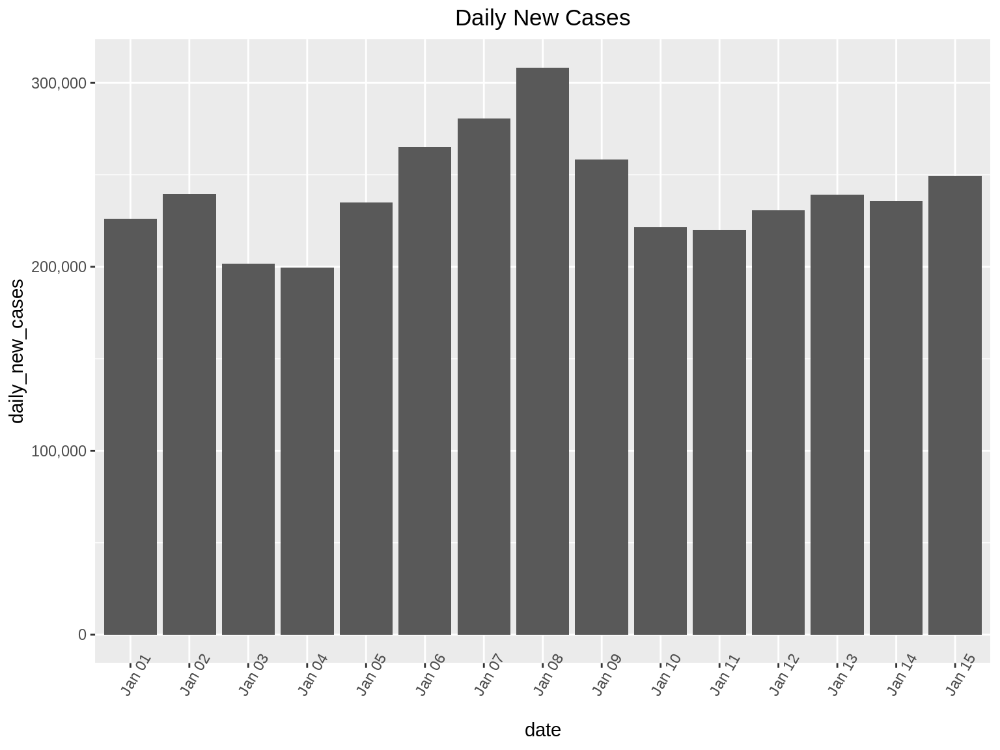
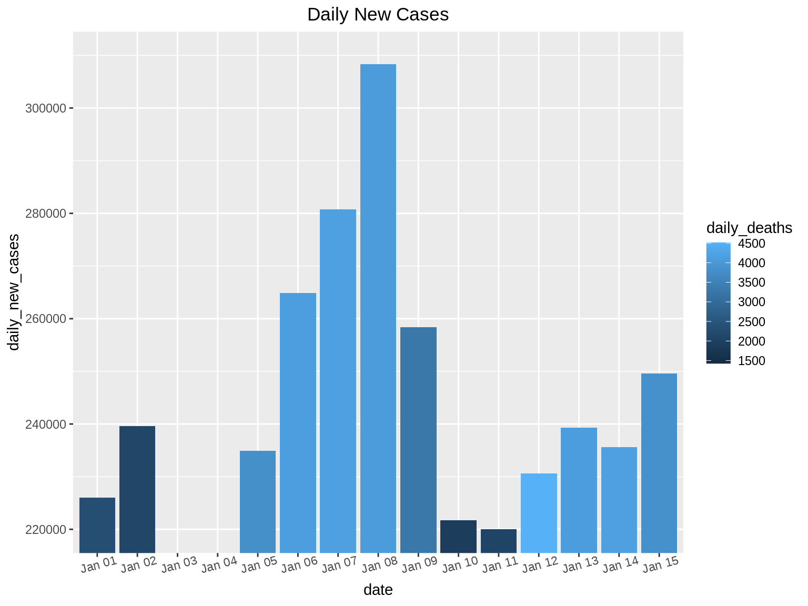
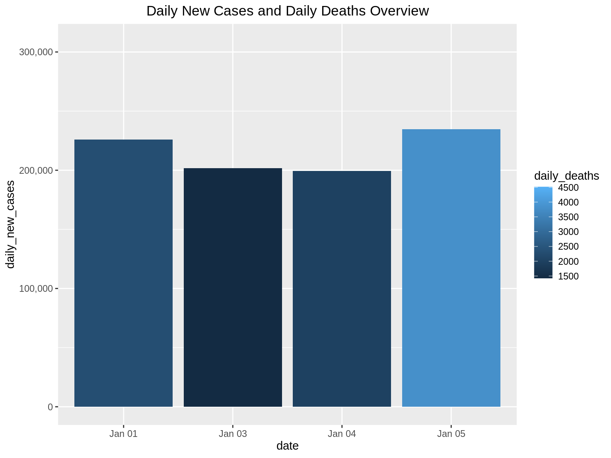
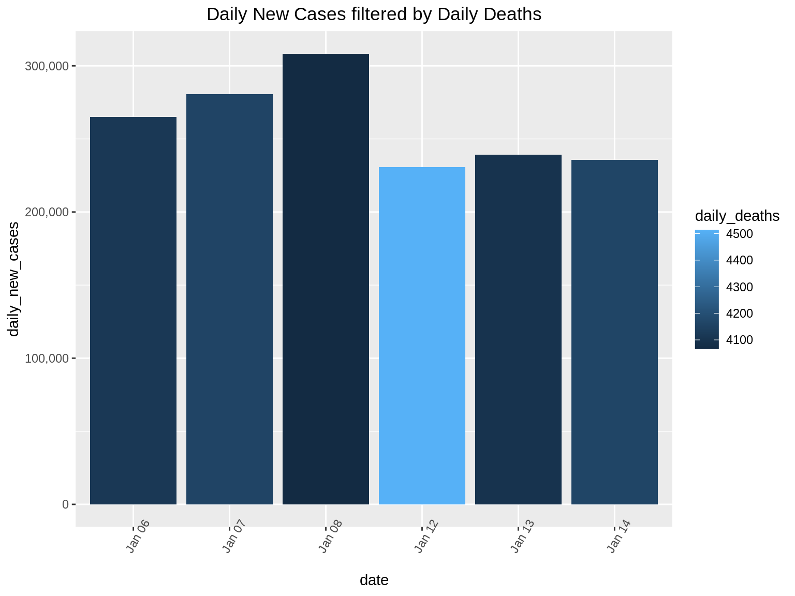

Chapter 44 Ben Shneiderman’s Visualization Mantra
Mohammed Aqid Khatkhatay and Sanket Gokhale
44.1 Introduction:
Data Visualization today has emerged as a very important aspect in any career. It has not only made comprehending data easy for the human brain but also gaining insights [1].
Visualization has become easier with the improvements in hardware and software over the years. Colors have been useful in deciding the information to be conveyed [2].
Good communication is the key to good understanding. Similarly good visualization is the key to good insights.
Every data visualization has 3 C’s namely Content, Context and Construction. Content basically refers to the data to be plotted. Context refers to the specifications about data, usually stored in a data dictionary. Construction is the phase where the visuals are built from the content and context.
44.2 Need for Visualization:
Firstly the need for any kind of data or information visualization is to gain insights into the data and not just pictures or graphs.
Moreover visualization allows us to detect faulty or missing data or inconsistencies within the data.
Anomalies can also be found and corrected. Visualization is multidisciplinary, that is any person can use it to get a deeper understanding of data.
It can help higher level professionals convert raw insights into business problems. Colors add different perceptions and can help think differently. Visualization should penetrate the visual domain of an individual.
Too much visualization can cause problems and staggering of data. It can also hide important insights. For this purpose we need fixed guidelines on how to apply visualizations and what to show and what to hide.
44.3 Ben Shneiderman’s Visual Information Seeking Mantra
In his paper titled “The eyes have it: a task by data type taxonomy for information visualizations” [3], Ben Schneiderman suggested the following 7 principles for visualization of data.
44.3.1 Step 1-> Overview:
The first step of the Holy Trinity of Visual Information Seeking is ‘Overview’. In this step, it is recommended to visualize the given data set in a simple way without going into too much detail. We do not want to lose any information in this step, thus it is recommended to not apply any filters and just visualize the given data to get an idea about it.
For explaining the different steps of Visual Information Seeking, we take the example of Covid-19 statistics from 1 January to 15 January of USA. The data set has 3 columns: (i) date (ii) daily_new_cases (iii) daily_deaths
As the first step, we will visualize the Covid-19 data set using simple bar graph. The x-axis represents the dates and the bar height shows the daily_new_cases for each date.
library(ggplot2)
library(reshape2)
library(scales)
daily_new_cases = c(225974, 239642, 201613, 199506, 234864, 264914, 280785, 308301, 258373, 221676, 220023, 230597, 239313, 235643, 249623)
daily_deaths = c(2304, 2109, 1427, 2003, 3806, 4115, 4160, 4066, 3278, 1883, 2078, 4513, 4097, 4161, 3821)
dat <- data.frame(date=c("Jan 01","Jan 02","Jan 03","Jan 04","Jan 05","Jan 06","Jan 07","Jan 08","Jan 09","Jan 10","Jan 11","Jan 12","Jan 13","Jan 14","Jan 15"),daily_new_cases=c(daily_new_cases), daily_deaths=c(daily_deaths))
ggp <- ggplot(dat, aes(x=date, y=daily_new_cases)) +
geom_bar(stat="identity", position="dodge") +
theme(axis.text.x = element_text(angle = 60)) +
scale_y_continuous(labels = comma) +
ggtitle("Daily New Cases") +
theme(plot.title = element_text(hjust = 0.5))
ggp
44.3.2 Step 2(and 3) -> Zoom and Filter:
After understanding the basic distribution of the data set in the first step, the next steps that follow are ‘Zoom’ and ‘Filter’. Here, we proceed to focus on the part of the data set that is of value to us. Zooming and Filtering help highlight the objects of interest using various techniques.
Continuing on our example, there are two ways we can zoom in on the data:
Suppose we want to find the days where the daily_new_cases is between 220,000 and 310,000. Here we will perform a zoom on the Y-axis so that we can only see bar graphs for days that have daily_new_cases between the 220,000 and 310,000.
We can also perform zoom on specific days. In this example, we want to find out the daily_new_cases from Jan 1 to Jan 5.
ggp1 <- ggplot(dat, aes(x=date, y=daily_new_cases, fill = daily_deaths)) +
geom_bar(stat="identity", position="dodge") +
theme(axis.text.x = element_text(angle = 15))
ggp1 +
coord_cartesian(ylim = c(220000, 310000)) + ggtitle("Daily New Cases") + theme(plot.title = element_text(hjust = 0.5))
ggp2 <- ggplot(dat, aes(x=date, y=daily_new_cases, fill = daily_deaths)) +
geom_bar(stat="identity", position="dodge") +
theme(axis.text.x = element_text(angle = 0))
ggp2 + xlim("Jan 01", "Jan 03", "Jan 04", "Jan 05") + scale_y_continuous(labels = comma)+ ggtitle("Daily New Cases and Daily Deaths Overview") + theme(plot.title = element_text(hjust = 0.5))
In this data set, we can filter to show only the dates of interest. Suppose we want to find the daily_new_cases for dates which have observed more than 4000 deaths. Here we can use the filter() function in R as follows:
library(ggplot2)
library(plotly)
p <-filter(dat, dat$daily_deaths>=4000)
ggp2 <- ggplot(p, aes(x=date, y=daily_new_cases, fill = daily_deaths)) +
geom_bar(stat="identity", position="dodge") +
theme(axis.text.x = element_text(angle = 60)) +
scale_y_continuous(labels = comma)
ggp2+ ggtitle("Daily New Cases filtered by Daily Deaths") + theme(plot.title = element_text(hjust = 0.5))
44.3.3 Step 4 -> Details On Demand
We identify areas of interest in the first step(Overview), and dig deeper into the data using zooming and filtering in the second step, the next step naturally should be to find exact details which will help us find interesting facts from the data set. The final step of the Holy Trinity is details on demand. Here we use the full power of interactivity that are provided by the libraries that we use.
For example, for the Covid-19 dataset, we can use the library ‘plotly’ to make the graph we produced above, more interactive. When we hover our cursor above each bar in this graph, we get the details for that particular day.
ggplotly(ggp2+ ggtitle("Daily New Cases filtered by Daily Deaths with details on Hover")+ theme(plot.title = element_text(hjust = 0.5))) In 1996, Shneiderman offered a taxonomy for visual information seeking. The taxonomy divides general visual information seeking into seven data types and seven tasks. This taxonomy is one of the earliest and most influential contributions to the information visualization field.
Seven Data Types:
• one-dimensional data:
This refers to the linear type of data. For example texts and numbers.
• two-dimensional data:
This refers to the multi-layer type of data. For example maps and contour plots.
• three-dimensional data:
This refers to the object type of data. For example buildings, street-view or mechanical instruments.
• temporal data:
This refers to the time based type of data. For example time charts and time series.
• multidimensional data:
This refers to the statistical and relational data containing n-attributes in n-dimensions. For example multidimensional histogram or multidimensional scatters.
• tree data:
This refers to data having parent-child type structure. For example Decision tree and Family tree.
• network data:
This refers to data in which attributes have relationships among themselves. For example social networks.
The additional tasks other than the Holy Trinity include the following:
• relate
• history
• extract
44.3.4 Step 5 -> Relate
Relate allows users to view relationships between data points. This mantra allows users to further explore networks or maps that help in determining the further course of actions. We can demonstrate this using a simple blood transfusion dataset which tells us the blood transfusion capability between different blood groups. We first plot the network diagram. Each arrow head in this indicates a valid blood transfusion relation.
8/27/2021: Setting eval=FALSE for the following code chunk since geomnet is currently not on CRAN and thus preventing GA from rendering the book.
library(GGally)
library(network)
library(ggnetwork)
library(geomnet)
data(blood, package = "geomnet")
# plot with ggnet2 (Figure 2a)
ggplot(data = blood$edges, aes(from_id = from, to_id = to)) +
geom_net(colour = "darkred", layout.alg = "circle", labelon = TRUE, size = 12, directed = TRUE, vjust = 0.6, labelcolour = "grey80", arrowsize = 1, linewidth = 0.5, arrowgap = 0.02, selfloops = TRUE, ecolour = "Blue") +theme_net() + ggtitle("Relationship between Blood Types") + theme(plot.title = element_text(hjust = 0.5))44.3.5 Step 6 -> History
This mantra enables the developer to create a history of user actions in order to let the user undo or redo any action taken while visualizing the data. This works on the assumption that the user is bound to make mistake or the desired goal of an activity is not obtained in the first attempt. Hence it is always desirable to give the user flexibility to undo or redo the necessary steps. Since it is difficult to demonstrate this in the form of an RMD we shall skip this mantra.
44.3.6 Step 7 -> Extract
This mantra allows users to visualize a part of the graph in order to focus only on the data that is necessary for immediate use.
In the below example we plot a graph showing effectiveness vs dose of phase 1 and phase 2 trials of a very small sample set. On hovering over the bar graphs we can hide/un-hide the necessary/unnecessary data. This is a good way to extract insights without getting hindered from data not required.
library(highcharter)
df <- data.frame(dose=c(0.5, 1, 2),
effectiveness=c(4.2, 10, 29.5))
df2 <- data.frame(supp=rep(c("Phase 1", "Phase 2"), each=3),
dose=rep(c(0.5, 1, 2),2),
effectiveness=c(6.8, 15, 33, 4.2, 10, 29.5))
hc <- df2 %>%
hchart('column', hcaes(x = 'dose', y = 'effectiveness', group = 'supp'))%>% hc_title( text = "<i>Effectiveness vs dose of phase 1 and phase 2 trials</i>",margin = 20,align = "left",style = list(useHTML = TRUE))
hc44.4 References:
[2] Lyn Bartram, Abhisekh Patra, and Maureen Stone. 2017. Affective Color in Visualization. In Proceedings of the 2017 CHI Conference on Human Factors in Computing Systems (CHI ’17). Association for Computing Machinery, New York, NY, USA, 1364–1374. DOI:https://doi.org/10.1145/3025453.3026041
[3] B. Shneiderman, “The eyes have it: a task by data type taxonomy for information visualizations,” Proceedings 1996 IEEE Symposium on Visual Languages, Boulder, CO, USA, 1996, pp. 336-343, doi: 10.1109/VL.1996.545307.